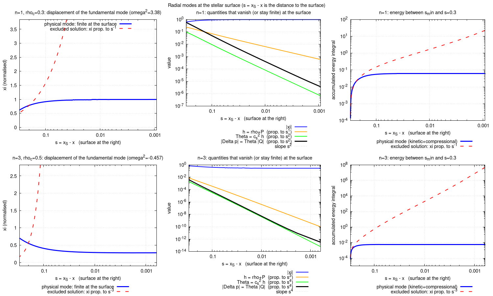
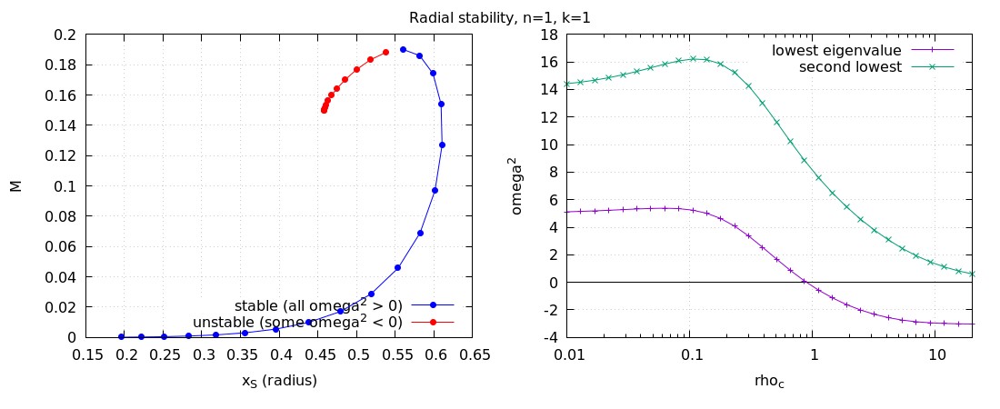

Part I (Sections 1–11): static profile equations. Part II (Sections 12–21): radial stability.
Source: Lopes & Okawa, “Λ stars” (Static_AdS.pdf), Sec. II.A. All steps below were also checked
symbolically with sympy (verify_einstein.py).
Metric (Eq. 1), with conformal factor \(\Omega = l/\cos x\):
\[ ds^2 = \frac{l^2}{\cos^2 x}\Big(-f^2dt^2 + g^2dx^2 + \sin^2x\,d\Omega_2^2\Big), \qquad f=f(x),\; g=g(x). \]Field equations and matter (Eqs. 2, 3), with \(\Lambda=-3/l^2\):
\[ G_{\mu\nu}+\Lambda g_{\mu\nu}=\kappa_G T_{\mu\nu},\qquad T_{\mu\nu}=(\rho+P)u_\mu u_\nu+P g_{\mu\nu},\qquad u^\mu=\Big(\frac{\cos x}{l\,f},0,0,0\Big). \]The normalization is right: \(g_{tt}(u^t)^2 = -\frac{l^2f^2}{\cos^2x}\frac{\cos^2x}{l^2f^2}=-1\). In mixed components \(T^\mu{}_\nu=\mathrm{diag}(-\rho,P,P,P)\).
Here and below, \(s=\sin x\), \(c=\cos x\), and a prime is \(d/dx\).
The non-zero ones (up to the symmetry in the lower indices) are
\[ \begin{aligned} \Gamma^t{}_{tx} &= \tan x + \frac{f'}{f}, & \Gamma^x{}_{tt} &= \frac{f}{g^2}\Big(f\tan x + f'\Big),\\[2pt] \Gamma^x{}_{xx} &= \tan x + \frac{g'}{g}, & \Gamma^x{}_{\theta\theta} &= -\frac{\tan x}{g^2},\qquad \Gamma^x{}_{\phi\phi} = -\frac{\sin^2\theta\,\tan x}{g^2},\\[2pt] \Gamma^\theta{}_{x\theta} &= \Gamma^\phi{}_{x\phi}=\frac{1}{\sin x\cos x}, & \Gamma^\theta{}_{\phi\phi} &= -\sin\theta\cos\theta,\qquad \Gamma^\phi{}_{\theta\phi}=\cot\theta . \end{aligned} \]The \(\tan x\) terms come from the conformal factor, since \(\partial_x\ln\Omega=\tan x\). In particular \(\Gamma^t{}_{tx}=N'/N\) for the lapse \(N=l f/\cos x\), which is what makes the conservation law below simple.
From \(R^\mu{}_{\nu}=\partial_\lambda\Gamma^\lambda{}_{\mu\nu}-\partial_\nu\Gamma^\lambda{}_{\mu\lambda}+\Gamma\Gamma-\Gamma\Gamma\) and \(G^\mu{}_\nu=R^\mu{}_\nu-\tfrac12R\,\delta^\mu_\nu\), the diagonal mixed components are:
\[ \begin{aligned} l^2\,G^t{}_t &= 1-\frac{1}{s^2}+\frac{2}{g^2}+\frac{1}{g^2s^2}-\frac{2c}{s}\frac{g'}{g^3},\\[4pt] l^2\,G^x{}_x &= 1+\frac{2}{g^2}-\frac{1}{s^2}+\frac{1}{g^2s^2}+\frac{2c}{s}\frac{f'}{f\,g^2}, \end{aligned} \]and \(G^\theta{}_\theta=G^\phi{}_\phi\) (a longer expression with \(f''\)). All off-diagonal components vanish, which is consistent with a static fluid, \(T_{tx}=0\).
Sanity check: empty AdS has \(f=g=1\). Then \(l^2G^t{}_t=l^2G^x{}_x=3\), so \(G^\mu{}_\nu=-\Lambda\delta^\mu_\nu\), as required.
\(G^t{}_t+\Lambda=\kappa_G T^t{}_t=-\kappa_G\rho\). Multiply by \(l^2\) and use \(l^2\Lambda=-3\):
\[ \kappa_G l^2\rho \;-\; \frac{2\cos x}{g^3\sin x}\,g' \;-\; \csc^2x \;+\; \frac{2}{g^2} \;+\; \frac{1}{g^2\sin^2x} \;-\; 2 \;=\; 0 . \tag{4} \]This is exactly the paper's Eq. (4). Checked numerically to machine precision with sympy.
\(G^x{}_x+\Lambda=\kappa_G P\):
\[ -2+\frac{2}{g^2}-\frac{1}{s^2}+\frac{1}{g^2s^2}+\frac{2c}{s}\frac{f'}{f\,g^2}=\kappa_G l^2P . \]Solve for \(f'/f\), using \(2-\tfrac{2}{g^2}=\tfrac{2(g^2-1)}{g^2}\) and \(\tfrac{1}{s^2}(1-\tfrac1{g^2})=\tfrac{g^2-1}{g^2s^2}\):
\[ \frac{f'}{f}=\frac{g^2\tan x}{2}\Big[\kappa_G l^2P+\frac{g^2-1}{g^2}\Big(2+\frac1{s^2}\Big)\Big] = \frac{\kappa_G l^2}{2}\,g^2\tan x\,P+(g^2-1)\frac{1+2s^2}{2sc}. \]Adding \(\tan x=\dfrac{2s^2}{2sc}\) to both sides, the \(g\)-dependent part combines as \(\dfrac{(g^2-1)(1+2s^2)+2s^2}{2sc}=g^2\tan x+\dfrac{g^2-1}{2sc}\), so
\[ \frac{f'}{f}+\tan x \;=\; g^2\tan x\Big(1+\frac{\kappa_G l^2P}{2}\Big)+\frac{g^2-1}{2\sin x\cos x}. \tag{$*$} \](Verified numerically at random points.)
The only non-trivial component of \(\nabla_\mu T^{\mu\nu}=0\) is \(\nu=x\):
\[ \nabla_\mu T^{\mu x} =\frac{\cos^2x}{l^2g^2}\Big[P'+(\rho+P)\Big(\frac{f'}{f}+\tan x\Big)\Big]=0 \;\;\Longrightarrow\;\; \frac{P'}{\rho+P}=-\Big(\frac{f'}{f}+\tan x\Big)=-\frac{N'}{N}. \]This is the hydrostatic equilibrium condition for lapse \(N=lf/\cos x\). The \(\tan x\) must be included; leaving it out gives a wrong result. (The identity above was verified symbolically.)
Combining 5 and 6, i.e. inserting \((*)\):
\[ \boxed{\;\frac{1}{\rho+P}\frac{dP}{dx}+g^2\tan x\Big(1+\frac{\kappa_G l^2\,P}{2}\Big)+\frac{g^2-1}{2\sin x\cos x}=0\;} \tag{5} \]Let \(P=k\rho^{1+1/n}\) (Eq. 6), so \(P'=k(1+\tfrac1n)\rho^{1/n}\rho'\), and write \(\kappa\equiv\kappa_G l^2\).
\[ g' = \frac{g^3\tan x}{2}\Big[\kappa\rho-\csc^2x+\frac{2}{g^2}+\frac{1}{g^2\sin^2x}-2\Big], \] \[ \rho' = -\frac{\rho^{\,1-1/n}\,\big(1+k\rho^{1/n}\big)}{k\,(1+1/n)} \Big[g^2\tan x\Big(1+\frac{\kappa}{2}k\rho^{1+1/n}\Big)+\frac{g^2-1}{2\sin x\cos x}\Big]. \]For \(n=1\) (\(P=k\rho^2\)), the factor \(\rho^{1-1/n}\) is 1 and the system is regular at the surface:
\[ \boxed{\; \begin{aligned} g' &= \frac{g^3\tan x}{2}\Big[\kappa\rho-\csc^2x+\frac{2}{g^2}+\frac{1}{g^2\sin^2x}-2\Big],\\ \rho' &= -\frac{1+k\rho}{2k}\Big[g^2\tan x\Big(1+\frac{\kappa k\rho^2}{2}\Big)+\frac{g^2-1}{2\sin x\cos x}\Big]. \end{aligned}\;} \]With \(l=1\), \(\kappa_G=8\pi\) (so \(G=1\)), \(k=1\) (the values used for the paper's figures).
Regularity requires \(g(0)=1\) and, as you noted, \(\rho\) even in \(x\), so \(\rho'(0)=0\). Expanding Eq. (4) with \(g=1+a x^2+\dots\) and \(\rho(0)=\rho_c\):
\[ \kappa\rho_c-6a+O(x^2)=0\;\;\Rightarrow\;\; g(x)=1+\frac{\kappa\rho_c}{6}x^2+O(x^4). \]Inserting this in Eq. (5):
\[ P'\;=\;-(\rho_c+P_c)\Big(1+\frac{\kappa P_c}{2}+\frac{\kappa\rho_c}{6}\Big)x+O(x^3), \]so \(\rho'(0)=0\) comes out automatically, and the apparent \(0/0\) singularities at \(x=0\) cancel. This is consistent with your remark. Numerically, evaluating at the origin needs the series (or a staggered grid), but the two equations themselves do not blow up.
\(\rho(x_S)=0\), hence \(P(x_S)=0\). For \(n=1\), \(\rho'(x_S)\neq0\), so \(\rho\) crosses zero linearly and \(x_S\) is well defined.
For \(x>x_S\) put \(\rho=0\) in Eq. (4) and let \(h=1/g^2\), \(u=h-1\). Then \(-\frac{2c}{s}\frac{g'}{g^3}=\frac{c}{s}h'\), and
\[ \frac{c}{s}u'+u\Big(\frac1{s^2}+2\Big)=0\;\Rightarrow\;\frac{u'}{u}=-\frac{1+2s^2}{sc} \;\Rightarrow\; u=-\mu\frac{\cos^3x}{\sin x}. \]Thus \(g^{-2}=1-\mu\cos^3x/\sin x\), which is the Schwarzschild–AdS solution in these coordinates. Identifying \(\mu=2GM\) reproduces Eq. (7): \(g(x_S)=\big(1-2GM\cos^3x_S/\sin x_S\big)^{-1/2}\). Inverted, \(M=\dfrac{(1-g_S^{-2})\sin x_S}{2G\cos^3x_S}\). This is the mass to output for each solution.
| Check | Result |
|---|---|
| \(G^t{}_t\), \(G^x{}_x\), \(G^\theta{}_\theta\) closed forms vs. direct Ricci computation | agree (≤ 5e-15) |
| tt equation vs. paper's Eq. (4) | agree (≤ 2e-15) |
| xx + conservation vs. Eq. (5) with P | agree (≤ 4e-15) |
| xx + conservation vs. Eq. (5) with ρ (as printed) | differ |
| \(\nabla_\mu T^{\mu x}\) = \(\frac{c^2}{l^2g^2}[P'+(\rho+P)(f'/f+\tan x)]\) | identity holds |
| Series at origin: \(\kappa\rho_c-6a=0\); \(P'\propto -x\,(1+\kappa P_c/2+a)\) | confirmed |
Setup follows Sec. II.C of Lopes & Okawa (Static_AdS.pdf), Eqs. (11)–(14). Every step below was
checked symbolically with sympy (derivation/), and the final equation was checked numerically (Sec. 20).
Metric (paper Eq. 1) and fluid, with \(\kappa\equiv\kappa_G l^2\) (\(=8\pi\) for \(l=1\)), \(s=\sin x\), \(c=\cos x\), a prime \(=d/dx\):
\[ ds^2=\frac{l^2}{\cos^2x}\Big(-f^2dt^2+g^2dx^2+\sin^2x\,d\Omega^2\Big),\qquad u^\mu=\Big(\frac{\cos x}{l f},0,0,0\Big). \]The static equations (derived and checked in Sections 4–7 above) are
\[ \begin{aligned} \kappa\rho_0&=\frac{2c}{g_0^3 s}\,g_0'+\csc^2x-\frac{2}{g_0^2}-\frac{1}{g_0^2s^2}+2, &&\text{(S1: tt)}\\ a&\equiv\frac{f_0'}{f_0}+\tan x=g_0^2\tan x\Big(1+\frac{\kappa P_0}{2}\Big)+\frac{g_0^2-1}{2sc}, &&\text{(S2: xx)}\\ P_0'&=-(\rho_0+P_0)\,a. &&\text{(S3: conservation)} \end{aligned} \]Shorthands used throughout:
\[ h\equiv\rho_0+P_0,\qquad c_s^2\equiv\frac{dP}{d\rho}=k\Big(1+\frac1n\Big)\rho_0^{1/n},\qquad \Theta\equiv c_s^2\,h=\Gamma P_0 . \]The background \(f_0\) is fixed by (S2) and the exterior Schwarzschild–AdS matching \(f_0(x_S)=1/g_0(x_S)\), so that \(f\to1\) at the boundary and \(\omega\) is the frequency conjugate to boundary time.
As in the paper, the perturbation keeps the same coordinate gauge (the angular part \(\sin^2x\) is unperturbed, so the areal radius \(l\tan x\) labels the shells). With a small parameter \(\epsilon\):
\[ f=f_0+\epsilon f_1,\quad g=g_0+\epsilon\,\delta g,\quad \rho=\rho_0+\epsilon\,\delta\rho,\quad P=P_0+\epsilon\,\delta P,\quad u^x=v\,u^t,\ \ v=\epsilon\,\partial_t\zeta , \]where \(\zeta\) is the Lagrangian displacement (the fluid element at \(x\) sits at \(x+\epsilon\zeta\)). Normalisation gives \(u^t=\cos x/(l f)\) to first order. The paper's remark that the \(tt\) and \(xx\) equations keep their static form while \(G_{tx}=\kappa T_{tx}\) carries the time dependence is what we find below.
The Einstein tensor was computed for general \(f(t,x),g(t,x)\), and \(E_{\mu\nu}=G_{\mu\nu}+\Lambda g_{\mu\nu}-\kappa_G T_{\mu\nu}\) was differentiated with respect to \(\epsilon\) at \(\epsilon=0\) (background equations used to eliminate \(f_0',g_0',P_0',\rho_0'\)).
(L1) momentum constraint, \(tx\). At first order \(T_{tx}=(\rho_0+P_0)u_tu_x\), and the equation reduces to \(\partial_t\delta g=-\tfrac{\kappa}{2}h\,g_0^3\tan x\,\partial_t\zeta\), hence
\[ \delta g=-\frac{\kappa}{2}\,h\,g_0^3\tan x\;\zeta . \](L2) energy constraint, \(tt\). This is the linearised Eq. (4). Inserting (L1):
\[ \delta\rho=-h\,Q-\rho_0'\,\zeta,\qquad Q\equiv\zeta'+K\zeta,\qquad K\equiv3\tan x+2\cot x+\frac{g_0'}{g_0}-\frac{\kappa}{2}\,h\,g_0^2\tan x . \]Meaning: the Lagrangian density change is \(\Delta\rho=\delta\rho+\rho_0'\zeta=-h\,Q\), with \(Q\) the fractional change of proper volume. Indeed \(3\tan x+2\cot x+g_0'/g_0=(\ln\sqrt\gamma)'\) for the spatial volume element \(\sqrt\gamma=g\sin^2x/\cos^3x\), and the last term of \(K\) is \(\delta g/(g_0\zeta)\).
(L3) pressure constraint, \(xx\).
\[ \Big(\frac{f_1}{f_0}\Big)'=g_0\,\delta g\Big[2\tan x\Big(1+\frac{\kappa P_0}{2}\Big)+\frac{1}{sc}\Big]+\frac{\kappa}{2}\,g_0^2\tan x\;\delta P . \](L4) Euler equation, \(\nabla_\mu T^{\mu x}=0\).
\[ \frac{h\,g_0^2}{f_0^2}\,\zeta_{tt}+\delta P'+(\delta\rho+\delta P)\,a+h\Big(\frac{f_1}{f_0}\Big)'=0 . \]The inertial term has weight \(h\,g_0^2/f_0^2\) (enthalpy density times \(g_{xx}/|g_{tt}|\)); \(a=\Gamma^t{}_{tx}\) is the gravitational acceleration.
For a barotropic polytrope the perturbations obey \(\delta P=c_s^2\,\delta\rho\), with \(c_s^2=dP/d\rho\) and \(\rho\) the total energy density, as in the paper ("Two Einstein equations and the equation of state link the perturbative quantities with the Lagrange displacement"). The Lagrangian pressure change is then, using \(P_0'=c_s^2\rho_0'\),
\[ \Delta p\equiv\delta P+P_0'\zeta=c_s^2\big(\delta\rho+\rho_0'\zeta\big)=-\,\Theta\,Q . \]Insert \(\delta\rho,\ \delta P=c_s^2\delta\rho,\ \delta g\) and (L3) into (L4). The metric perturbation \(f_1\) drops out completely (checked symbolically), and the equation collapses to
\[ \boxed{\;\frac{h\,g_0^2}{f_0^2}\,\zeta_{tt}=(\Theta Q)'+\sigma\,\Theta Q-\beta\,\zeta\;} \]with
\[ \sigma=a+\frac{\kappa}{2}\,h\,g_0^2\tan x, \] \[ \beta=-\frac{h}{4T^2}\Big[\kappa^2P^2T^4g^4+6\kappa PT^4g^4+2\kappa PT^4g^2+2\kappa PT^2g^4+2\kappa PT^2g^2+9T^4g^4+6T^4g^2-7T^4+6T^2g^4+12T^2g^2-14T^2+g^4+6g^2-7\Big], \]where \(T=\tan x\), \(g=g_0\), \(P=P_0\). The term \(\beta\) does not depend on \(c_s^2\): it is the purely gravitational part of the restoring force. It is finite at \(x=0\) because \(g^4+6g^2-7\to8(g^2-1)\propto x^2\).
Write \(\zeta=\xi(x)e^{i\omega t}\), so \(\zeta_{tt}=-\omega^2\xi\). Expanded in \(\xi\):
\[ \Theta\,\xi''+\big[\Theta'+\Theta(K+\sigma)\big]\xi'+V\xi+\omega^2\frac{h g^2}{f^2}\,\xi=0,\qquad V=(\Theta K)'+\sigma\Theta K-\beta . \]The first-derivative coefficient is \(\Theta'+\Theta\,(\ln E)'\) with
\[ (\ln E)'=K+\sigma=a+3\tan x+2\cot x+\frac{g'}{g}\quad\Longrightarrow\quad \boxed{E=\frac{f\,g\,\sin^2x}{\cos^4x}} \](the \(\pm\tfrac\kappa2hg^2\tan x\) terms cancel, and \(a=(\ln f)'+\tan x\)). Multiplying by \(E\) gives the self-adjoint form
\[ \big(E\,\Theta\,\xi'\big)'+E\,V\,\xi+\omega^2\,E\,W\,\xi=0,\qquad W\equiv\frac{h\,g^2}{f^2}. \]Using \(EV=(E\Theta K)'-E\Theta K^2-E\beta\) this is equivalent to \(\;(E\Theta Q)'-K\,E\Theta Q-E\beta\,\xi+\omega^2EW\xi=0\). Multiplying by \(\xi\) and integrating (boundary terms vanish, see Sec. 18) gives the variational principle
\[ \boxed{\;\omega^2=\frac{\displaystyle\int_0^{x_S}E\,\big(\Theta\,Q^2+\beta\,\xi^2\big)\,dx}{\displaystyle\int_0^{x_S}E\,W\,\xi^2\,dx}\;} \]The compressional term \(\Theta Q^2\ge0\) is stabilising, \(\beta<0\) (gravity) destabilising; \(\omega^2<0\) (imaginary \(\omega\)) signals instability.
The paper writes \(A\xi''+B\xi'+C\xi-\omega^2\xi=0\), i.e. \(\mathcal M\xi=\omega^2\xi\). Dividing by the weight \(W\):
\[ A=-\frac{f^2c_s^2}{g^2},\qquad B=A\,\frac{(E\Theta)'}{E\Theta}=-\frac{f^2c_s^2}{g^2}\Big[\frac{\Theta'}{\Theta}+a+3\tan x+2\cot x+\frac{g'}{g}\Big],\qquad C=-\frac{f^2}{g^2h}\,V . \]\(A<0\) because \(\omega^2\xi=-(\ldots)\xi''\) is the usual positive operator \(-d^2/dx^2\).
The matrix of Eq. (14) is the discretisation of this operator; I use a symmetric finite-element version of the self-adjoint form instead, which is better conditioned (stability.py).
Discretising on the \(N+1\) grid points with \(\xi_0=0\) turns the problem into the matrix eigenproblem of the paper's Eq. (14),
\(\mathcal M\,\eta=\omega^2\eta\), where \(\mathcal M=\mathsf{Mass}^{-1}\mathsf{K}\) and \(\mathsf K,\mathsf{Mass}\) are the symmetric
finite-element matrices of the numerator and denominator of the variational principle. The code computes all eigenvalues
(stability.spectrum), and the star is declared unstable if any \(\omega^2<-10^{-6}\); stability.stability
returns (stable, lowest ω², number of negative eigenvalues). Because \(\mathsf K\) and \(\mathsf{Mass}\) are symmetric with
\(\mathsf{Mass}\) positive definite, all eigenvalues are real and the negative ones are counted reliably. For \(n=1,\ k=1\) the star is
stable below \(\rho_c\approx0.89\) and has exactly one negative eigenvalue above it.
The radial problem is posed on \(0\le x\le x_S\). The two ends behave very differently: the centre is a regular point of the equation, the surface is a singular point, and that is what decides which condition applies there.
\(\xi(0)=0\). Near \(x=0\), \(K\to2/x\), so \(Q\to\xi'+2\xi/x\), and the regular solution is \(\xi\propto x\). By spherical symmetry the fluid at the origin cannot move, so this is a genuine condition on \(\xi\).
The paper's condition is \(\delta P|_{x_S}=0\). In terms of the Lagrangian pressure change of a fluid element,
\[ \Delta p=\delta P+P_0'\,\zeta=-\Theta\,Q ,\qquad\text{and}\qquad P_0'=-h\,a\;\to\;0\ \text{ at the surface,} \]so \(\delta P\) and \(\Delta p\) coincide there and both must vanish. Physically: outside the star there is vacuum, which cannot supply any pressure. A fluid element on the surface has zero pressure before the perturbation and must have zero after, so \(\Delta p=0\). Nothing is required of the displacement \(\xi\) itself, because the surface is free to move. A nonzero \(\xi(x_S)\) is the amplitude with which the stellar radius oscillates, and for the fundamental mode (collapse or expansion of the whole star) it has to be nonzero. Forcing \(\xi(x_S)=0\) would clamp the surface like a rigid wall, a different problem.
Let \(s=x_S-x\to0\). The static equations give \(w=\rho^{1/n}\) crossing zero linearly, \(w\simeq a_S\,s/\big(k(n+1)\big)\) with \(a_S=a(x_S)\) (Sec. 8). Hence the coefficients of the radial equation scale as
\[ h=\rho+P\propto s^{\,n},\qquad c_s^2=k\Big(1+\frac1n\Big)w\propto s,\qquad \Theta=c_s^2h\propto s^{\,n+1},\qquad W\propto s^{\,n},\qquad \beta,\,V\propto s^{\,n}, \]while \(E,f,g,K\) are regular. Write \(\Theta\simeq\Theta_1s^{n+1}\) and \(E(V+\omega^2W)\simeq C_0\,s^{n}\). With \(d/dx=-d/ds\) the equation \((E\Theta\xi')'+E(V+\omega^2W)\xi=0\) becomes, to leading order (primes now \(d/ds\)),
\[ s\,\xi''+(n+1)\,\xi'+\lambda\,\xi=0,\qquad \lambda=\frac{C_0}{E_S\Theta_1}\ \text{(a finite constant)} . \]This is a regular singular point. Trying \(\xi\sim s^\alpha\) gives the indicial equation \(\alpha(\alpha+n)=0\), so the two local solutions are
\[ \xi_{\rm reg}=\xi_S\Big[1-\frac{\lambda\,s}{n+1}+\dots\Big]\quad(\alpha=0),\qquad \xi_{\rm sing}\propto s^{-n}\quad(\alpha=-n) \](with a logarithm for integer \(n\)). The regular branch has a finite displacement \(\xi_S\) and a finite slope fixed by \(\lambda\); the amplitude \(\xi_S\) is just the overall normalisation of the eigenfunction. For the regular branch \(Q\) stays finite, so
\[ \Delta p=-\Theta Q\ \propto\ s^{\,n+1}\ \to\ 0 . \]The condition \(\Delta p=0\) is therefore satisfied automatically by the regular branch, and the vanishing of \(\Delta p\) does not need \(\xi_S=0\).
For \(\xi_{\rm sing}\propto s^{-n}\) we have \(Q\simeq-\xi_s\propto s^{-n-1}\), and the two energies behave as
\[ \begin{aligned} E_{\rm kin}&\propto\int E\,W\,\xi^2\,dx\sim\int s^{\,n}s^{-2n}\,ds=\int s^{-n}ds,\\[2pt] E_{\rm comp}&\propto\int E\,\Theta\,Q^2dx\sim\int s^{\,n+1}s^{-2n-2}\,ds=\int s^{-n-1}ds . \end{aligned} \]The compressional energy diverges for every \(n>0\) (the kinetic one also diverges for \(n\ge1\), logarithmically at \(n=1\)). A physical mode must have finite energy, so \(\xi_{\rm sing}\) is discarded and only the finite \(\xi_{\rm reg}\) remains. This is the real content of "\(\delta P|_{x_S}=0\)": it selects the regular solution, and no further condition on \(\xi\) is needed. It is also why the discretised problem converges without any condition imposed at the outer end (Sec. 20); the weak form's natural boundary condition is \(\Delta p=0\).
The regular branch is cheap because the fluid there is light: both energies carry a factor of the density, so a large displacement of the outer layers costs very little. This is why mode amplitudes normally grow towards the surface.
The figure shows the fundamental mode of two stars (\(n=1,\ \rho_c=0.3\), stable, and \(n=3,\ \rho_c=0.5\), unstable), as a function of the distance \(s\) to the surface (the surface is at the right edge).

Vector version (zoomable). Left: the computed displacement tends to a finite value, while the excluded solution \(\propto s^{-n}\) (dashed, scaled to agree at \(s=0.2\)) blows up. Middle: \(|\xi|\) stays finite, while \(h\), \(\Theta\) and the Lagrangian pressure change \(|\Delta p|=\Theta|Q|\) fall off as the powers \(s^n\), \(s^{n+1}\), \(s^{n+1}\) predicted above. (The last few grid cells before the surface deviate slightly from the straight line: a discretisation effect.) Right: the energy accumulated between \(s_{\min}\) and \(s=0.3\). For the physical mode it saturates, and for the excluded solution it grows without bound as \(s_{\min}\to0\).
| star | grid points from surface | \(\xi\) | \(Q\) | \(\Theta\) | \(\Delta p\) (Lagrangian) | \(\delta P\) (Eulerian) |
|---|---|---|---|---|---|---|
| \(n=1,\ \rho_c=0.3\) | 300 | 0.83 | 5.5 | 3×10⁻² | −1.6×10⁻¹ | −2.8×10⁻² |
| 30 | 0.99 | 4.9 | 2.6×10⁻⁴ | −1.3×10⁻³ | 1.3×10⁻² | |
| 3 | 1.00 | 5.1 | 1.9×10⁻⁶ | −9×10⁻⁶ | 1.2×10⁻³ | |
| \(n=3,\ \rho_c=0.5\) | 300 | 0.77 | 2.1 | 3×10⁻³ | −7×10⁻³ | 1×10⁻² |
| 30 | 0.32 | 1.4 | 6×10⁻⁷ | −9×10⁻⁷ | 1.5×10⁻⁵ | |
| 3 | 0.28 | 1.5 | 4×10⁻¹¹ | −6×10⁻¹¹ | 1×10⁻⁸ |
The Eulerian pressure change \(\delta P=\Delta p-P_0'\xi\) also tends to zero at the surface for every \(n\), because both \(\Delta p\to0\) and \(P_0'=-ha\to0\); in the table, \(\delta P\) follows \(-P_0'\xi\) there. The Eulerian density change behaves differently: \(\delta\rho=\Delta\rho-\rho_0'\xi\), and \(\Delta\rho=-hQ\to0\), so \(\delta\rho(x_S)=-\rho_0'(x_S)\,\xi_S\). For \(n=1\) this is nonzero, because the moving surface sweeps through a finite density gradient. For \(n>1\) the gradient vanishes at the surface and \(\delta\rho\to0\) too.
For \(x>x_S\) the vacuum has no fluid, so no radial perturbation of the metric is excited at this order (Birkhoff).
derivation/)| Check | Result |
|---|---|
| (L1): \(E_{tx}\) with \(\delta g\) from above | vanishes identically |
| (L2): \(E_{tt}\) with \(\delta\rho=-hQ-\rho_0'\zeta\) | vanishes (random background points, ≤ 4e-14) |
| (L3): \(E_{xx}\) with the \((f_1/f_0)'\) above | vanishes (≤ 6e-13) |
| Linearised \(\nabla_\mu T^{\mu x}\) vs. (L4) | proportional with a common point-dependent factor for all of \(\zeta,\zeta',\zeta'',\zeta_{tt}\) |
| \(f_1\)-independence of the Euler equation after using (L3) | holds |
| Collapse to \((\Theta Q)'+\sigma\Theta Q-\beta\zeta\) (coefficients of \(\zeta'',\zeta',\zeta\)) | exact; \(\beta\) has no \(c_s^2\) or \(c_s^{2\prime}\) dependence |
Scripts, run in this order from derivation/ (needs sympy): linearize.py then check_reduction.py.
stability.py, n = 1, k = 1)Turning-point criterion. Along a sequence of equilibria, a mode of a static perturbation (\(\omega=0\)) must appear where \(M(\rho_c)\) is extremal. Finding both numerically with \(N=800\):
| Quantity | \(\rho_c\) |
|---|---|
| \(\omega_0^2=0\) | 0.89226 |
| \(dM/d\rho_c=0\) (\(M_{\max}=0.190024\)) | 0.89226 |
They agree to the 5 digits I resolved. This is a non-trivial check of the whole chain, since \(\omega^2\) comes from the perturbation equation and \(M\) from the static equations.
Convergence of \(\omega_0^2\) at \(\rho_c=0.5\) (second order in the grid):
| N | 100 | 200 | 400 | 800 | 1600 | 3200 |
|---|---|---|---|---|---|---|
| \(\omega_0^2\) | 1.744278 | 1.744735 | 1.744846 | 1.744873 | 1.744880 | 1.744881 |
Family. For \(\rho_c<0.89\) all modes have \(\omega^2>0\) (e.g. \(\rho_c=0.01\): 5.1, 14.4, 27.9); the fundamental mode becomes unstable at the mass maximum and stays so up to \(\rho_c=20\), while the first excited mode remains stable.

stability.py: builds the finite-element problem from a converged W4 star and returns the lowest \(\omega^2\). python stability.py n k scans \(\rho_c\) and writes stability_n<n>_k<k>.dat/.gp/.png.derivation/linearize.py, derivation/check_reduction.py: the symbolic derivation and the check of the reduction.make_surface_figure.py: data and figure (surface_behaviour.png/.svg) for Sec. 18.